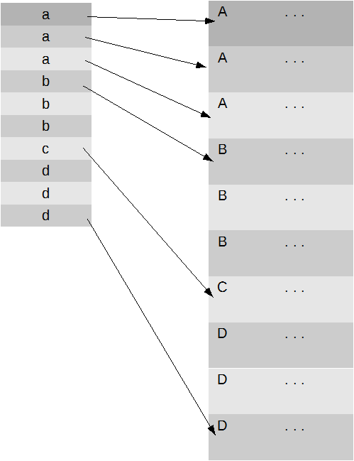
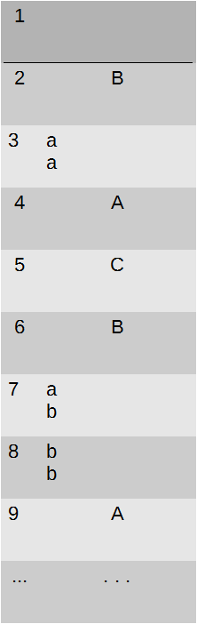
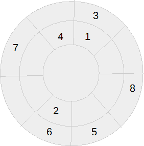

Se volete usare quanto segue, lo fate a rischio di incartamento. Altrimenti citate la fonte.
Il lettore perdonerà, spero, quel poco di sarcasmo e la forma poco chiara. Questo documento è ancora in evoluzione in quanto rappresenta sia un memoriale che un memorandum.
A scuola si studia che le idee di Hitler hanno causato una guerra di cinque anni e venti milioni di morti. Non si dice però che la genialità di uno dei padri dell'informatica ne ha ridotto la durata di due anni, salvando quattordici milioni di vite, tra cui probabilmente il nostro avo.
L'informatica è una rivoluzione che non trova eguali nella pietra, nella pergamenta e nella carta. Gli informatici hanno una missione sociale. La storia non ci aiuta, a parte che sta diventando una babele di linguaggi e di cloni.
Ecco, ora che sappiamo la formula della relatività speciale, siamo tutti "in-formati". Invece, quella formula è una semplificazione. Noi informatici non dovremmo farci abbagliare troppo facilmente dall'ultimo articolo di giornale che parla dell'ultimo silver bullet, la soluzione delle soluzioni. Nulla si crea e nulla si distrugge.
Quando non possiamo provare o negare qualcosa, si crea una credenza basata sul piacere psicologico che più l'attrae.
Heisemberg ha determinato che il valore di qualcosa e il suo cambiamento non sono misurabili contemporaneamente.
Ciò vale anche per la comprensione, soprattutto per il difetto della circolarità dei sistemi linguistici.
Personalmente ritengo che questa vada a braccetto con i teoremi di incompletezza di Gödel. Sostanzialmente essi dicono che la matematica da sola non basta a descrivere la realtà. Ci vorrà talvolta una descrizione letterale. Probabilmente è per questo che molti credono che la matematica sia un'opinione. Altri credono che la realtà sia una convinzione collettiva.
Nel '700 il matematico A.Pareto, stimò che le relazioni tra gli elementi di un dominio (non ottimizzato) finiscono in rapporto 80/20 (più o meno). Il 20% del prodotto, rende l'80%. Nell'80 IBM fece proprio questo principio dichiarando che basta scrivere il 20% del codice in un linguaggio a basso livello.
Questo principio si può applicare anche all'organizzazione del codice e non solo al tipo. Facile dirsi ma ovviamente tra teoria e pratica, c'è sempre di mezzo l'applicazione pratica.
print("hello!" )
const greeting ="hello!" ;
print(greeting)
var dynamicGreeting= get(greeting);
print(dynamicGreeting)
console. print( dynamicGreeting )
greetingType dynamicGreeting( greeting);
console. print( dynamicGreeting. get() )
greetingType dynamicGreeting( greetings. hello );
console. print( dynamicGreeting.verb )
greetingType dynamicGreeting( greetings. hello, console );
dynamicGreeting. say()
print("hello Dr. Falken!" )
L'OOP (nata negli USA) ha diffuso l'idea che l'astrazione sia la madre delle soluzioni. Sfortunatamente ne sappiamo tutti poco, tutt'al più conosciamo qualcuno che sa (il docente o l'articolo che ci hanno istruito). La pratica ci ha dimostrato che l'astrazione non ha ridotto l'entropia del software come il type strict non riduce significativamente i bugs. Alla quarta review, un sistema di classi subisce uno sconvolgimento. Si salvano quelle più simili a dei tipi base. Infatti la programmazione Object Based non è da eludere. Ma ogni linguaggio di programmazione è pur sempre un linguaggio e per questo gravido degli stessi limiti.
Uno di questi è la circolarità. Possiamo infatti definire una variabile white di tipo Color e assegnarle valore black. Non è invece possibile creare una variabile di nome True e assegnarle valore False (forse in smalltalk si può anche questo). Se con la programmazione strutturata si poteva incappare nello spaghetti code, con l'OOP abbiamo il cipolla code.
Quante parole spese su questo tema. Certamente abbiamo capito che i giudizi sono da evitare. Si vuole un codice autoesplicante, chiamando anche le vecchie variabili "i" dei piccoli contesti con "FieldIndexOfSourceTable". Eppure nessuno spiega come commentare codice da 2.000.000 di righe. Si potrebbe cominciare considerando il 20% e ... (chiamatemi).
"Chiudere la porta" è un comando che non esprime il processo. Poiché la mia auto è vecchiotta, ho spiegato a moglie e figli di "accompagnarla fino a 10cm dalla chiusura e poi chiuderla". Questo esempio ha delle implicazioni con l'impiego delle risorse, l'importanza della documentazione e il Pair Programming.
Il significato della parola "informatica" non è:"togliamo la carta", come è accaduto con pergamene e tavole di pietra. Sebbene paperless riduca i costi a 1/10, aumentano i costi del processo. I software di simulazione documentale come Word e Excel e le emails rappresentano un limite che il web supera.
Funziona. Dicono faccia risparmiare il 30%. Si, nel mondo "organizzato" anglosassone, nel mondo "italiano" latino, arriverà anche al 50%.
Come dicevo dell'OOP, parlare di "albero", "casa" è come parlare del sesso degli angeli. Non ha nulla di concreto. Per altro, sempre di comunicazione si tratta, con tutti i vincoli. Tra questi c'è il problema del sesto livello di narrazione. A questo livello, qualsiasi contenuto avesse l'origine, sarà completamente cambiato (n.d.p.: Angular già alla seconda versione). Avere un disegno comune vuol dire avere un riferimento anche se (o perché) non è chiaro che senso dare alla freccia per rappresentare "A dipende da B".
Se non ci sono dubbi che "2+2=4", già ci vengono con:"4=2+2". Il primo dice che "causa->effetto". Non so gli arabi, ma per chi è abituato a leggere da sinistra a destra, questo è il processo che svolgerà il cervello in automatico.
Il testo di un bug, redatto da un ex "tecnicamente competente" programmatore, si strutturava così:
1. contesto del problema
2. esempio di soluzione temporanea adottata
3. nota tecnica di implementazione
4. nota tecnica di altra implementazione analoga
Il risultato è stato che, pure per un "esperto" come me, ho implementato i punti 2 e 4. Questo perché, voi per fretta, vuoi per sonnolenza, vuoi qualsiasi lecito motivo, ma non certo la volontà di creare danno o extra lavoro, il punto 2 era una ridondanza del punto 3.
Un'implementazione non ne dovrebbe includere due e chiamarsi bug, ma mi adeguo.
I bugs sono:"Non ho avuto/dedicato abbastanza tempo all'analisi/test". Meno tempo significa soldi non spesi. Poi ci può essere chi per esperienza, evita a priori di scrivere codice "aperto" alla nascita di bugs, ma questa è un'altra storia.
La teoria dei sistemi dice che:
"Do Not Repeat Yourself" e "Keep It Simple And Stupid" sono capi saldi della programmazione. C'è chi si spinge oltre con "non commentate il codice, riscrivetelo" ossia scrivere codice autoesplicante (poiché è scritto è già tale, forse il riferimento è ad altro). Vedremo degli esempi.
Quando la programmazione era solo strutturata e lo sviluppo software partiva quasi dal nulla, il programmatore doveva necessariamente sviluppare diligenza e chiudere tutto ciò che apriva.
Poi vennero il Garbage Collector e nuovi paradigmi di programmazione astratta che ancora oggi promettono al programmatore di poter dimenticare tutta una serie di fastidiosi doveri. Il concetto dell'OOP nasce da un'idea di Alan Kay che ha dichiarato di non aver mai pensato ad un linguaggio. Il suo accostamento alla biologia era solo un'analogia. La biologia tratta più di due o tre livelli (classe/istanza o modello/classe/interfaccia). Con famiglia, regno e quant'altro ne ha almeno nove. Ogni semplificazione implica una riduzione e ogni obbligo è anche un impedimento.
Nel linguaggio delle LEGO, se i mattoncini rappresentano il carattere e la loro combinazione forma la personalità. Se funzioni e tipi base sono i mattoncini. Le LEGO moderne sono più bene in quanto più vicine al prodotto rappresentato. L'aumento dei micro-pezzettini e la loro specializzazione ha ridotto la creatività. Probabilmente si possono fare anche più cose, ma è richiesta maggiore creatività ed immaginazione. Ciò scoraggia l'inventiva.
Quando ho cominciato questo mestiere, le CPU erano a 4Mhz e i computer avevano 16KB di RAM, grafica inclusa.
S = "", I = 0 WHILE ( I++ < 5000000 ) DO S = S + "0123456789"
Questo semplice programma esegue il concatenamento di 10 caratteri per 5 milioni di volte. Richiede solo 1/1000 della memoria di cui sono dotati i computer moderni. E' un esempio forzato, ma su un processore a 3GHz, verrebbe eseguito in un millesimo di secondo (1/3000000000*5000000).
In pratica arriverà invece a saturare anche un computer potente, poiché quella che dovrebbe essere un concatenamento (progressivo) è in realtà una somma, ossia un'operazione ripetitiva che si porta dietro il pregresso.
Il C++ capisce che la somma è un concatenamento ed ottimizza. C# NON lo faceva, almeno fino alla versione 6. Vorrei sapere se Haskell lo fa e come risolve questa situazione.
Chi NON ha esperienza di programmazione a basso livello, potrebbe non scoprirlo mai, concludendo che sia necessario scalare l'hardware.
Questo problema affligge maggiormente nell'uso di oggetti e la dove ci sia gestione di memoria con il Garbage Collector.
Prima dell'OOP si vedeva codice tipo:
if action = costante then
else if action = ...
Dopo l'OOP si vede codice tipo:
if typeOf action is ....
Vedo spesso usare il GUID come chiave per ovvie ragioni di unicità. E' utile soprattutto in previsione di una sincronizzazione tra sistemi diversi anche se appartenenti alla stessa soluzione (es. mobile<->server). Anche questa è una soluzione psicologicamente di comodo. Un INT indirizza quattro miliardi di records ed è più che sufficiente.
Quel che un programmatore sa è che un INT occupa 4bytes e un GUID 16bytes. Può non sapere che un processore a 32 ha una word di registro che contiene l'INT ma ne deve impiegare 4 per un GUID. Ciò vuol dire che (sempre esempio forzato), un processore a 3GHz potrebbe gestire 3 miliardi di ID di tipo INT al secondo. Diventano 700 milioni in caso di GUID. Ovviamente sappiamo che già questo numero va ben oltre la realtà.
Le implicazioni sono tante. Ho potuto però dimostrare ai membri del mio team che una sincronizzazione PDA/SERVER che mandava in crash il PDA con 3000 records con GUID, raggiungeva i 15000 con l'INT. Poi abbiamo risolto mandando l'intero archivio, ma non ho detto loro che si poteva migliorare di un fattore 10 le prestazioni con un semplice [segreto].Rimanendo in tema databases, mi è capitato tanto di dover spiegare cosa e come aggiungere indici, quanto perché toglierli o fare a meno. Se da una parte è abbastanza intuibile che un indice appesantisce la fase di scrittura, si pensa meno che una scrittura può implicare una lettura. Figuriamoci in ambiente ad alta concorrenza, magari su server monolitico.
Per questioni di scelte progettuali, questo problema può rendere addirittura un prodotto gratuito come Postresql più interessante di una licenza MSSql Server Enterprise da 150.000€.
Ma quel che sfugge per carenza di knowledge base (KB) è che una lettura tramite indice può sfociare certamente in una letura diretta di una pagina, ma questa è come sparpagliata in una stanza assieme alle altre. Vediamo la grafica.
La figura 1 è una raffigurazione convenzione di indice a sinistra e tabella a destra.
 fig.1Nel vecchio dBase, queste due strutture costituivano due files. Oggi finiscono in un unico file rappresentabile come in figura 2.
 fig.2La figura 2 verrebbe utile per far capire perché MSSQL richiede meno risorse di Oracle ma allo stesso tempo degrada esponenzialmente in performance. Non è questo però l'oggetto del paragrafo.
Questa vista logica, nella realtà diventa qualcosa di simile alla figura 3.
 fig.3Ricordo che sono delle rappresentazioni forzate. Lo sparpagliamento può essere minore, grazie alle proprietà del file system o alle capacità del sistema operativo ma può essere anche maggiore a seconda della configurazione software o hardware. Quando non sono HP e Oracle a lavorare assieme, spesso le configurazioni software e hardware non c'entrano nulla l'una con l'altra.
Questo vale sia per SQL che noSQL. Già qualche sostenitore del noSQL si sta ricredendo. Ne ho visti tanti di entusiasmi smorzarsi dopo il primo decennio. Se ci sono più di 800 linguaggi di programmazione ma il C rimane tra i primi 10 più usati, ci sarà un motivo. Mi stupisce sempre sentire di performance eccelse di strumenti quali ad esempio Node.js. Azzarderei a dire che le performance di sviluppo sono inversamente proporzionali alle prestazioni di runtime.
Per un'analisi di differenza di normalizzazione in caso di un Document System Management, seguire questo link
10 piccole query su mono processo possono essere più veloci di una query complessa ottimizzata in automatico dall'engine su CPU multithread.
La "normalizzazione" è il principio DRY per i databases. Tuttavia la descrizione dell'articolo deve essere duplicata
nella bolla/fattura perche sono documenti ufficiali. Nel mondo noSQL la ridondanza dei dati fa anche bene alla distribuzione, per il
bilanciamento di carico etc.
Ci sono anche casi in cui è bene duplicare il codice. Ad esempio, per chi si è imbattuto in ORM fai da te,
che omettono tutta una serie di features degli engine DB tipo la gestione delle transazioni o
la gestione delle dipendenze, eseguire un'operazione di copia con versionamento risulta in 4 operazioni di I/O anziché in una transazione unica.
Se l'ORM è stato scritto con tutti i crismi, le 4 operazioni risulteranno in un unica classe od oggetto riciclato 4 volte ma con problemi di gestione della concorrenza.
Per farla breve è più utile ridondare il codice per ridurre la complessità (più chiarezza e semplicità) ed equalizzare la cultura del team.
Quando bisognava modificare un programma, 20 anni fa, si aggiungeva un parametro o un campo ad una struttura e poi il relativo codice. A volte poteva bastare aggiungere un ID ed espandere uno switch o appliare l'uso della parte variabile della struttura. Oppure in C c'erano le UNION, ma è acqua passata. Poi qualcuno ha detto che così non andava bene perché tra puntatori e chi metteva i campi in mezzo e il cast etc., insomma si spaccava tutto. Così ha inventato l'OOP e poi le interface. Rimane il problema che tra chi chiede, chi prende in carico e chi esegue, non devono conoscere per il principio di disaccoppiamento, al fine di mantenere gli oggetti riciclabili. Ad ognuno viene dato il set di informazioni limitato a ciò che lo interessa. Ad esempio chi salva un dato, non sa che è nel contesto di una copia carbone. Ed ecco che quel che è originato come un dato di tipo CopiaCarbone, finisce con un tipo SalvaRecord intermediato da un tipo SalvaConCopiaSorgente tutti in religioso rispetto dell'interfaccia comune.
"L'organizzazione di un'azienda è inversamente proporzionale al numero di fogli XLS che usa."Questa non è mia, ma la sottoscrivo. Se già rigide strutture possono contenere dati assurdi tramite campi sovradimensionati o note, figuriamoci cosa può fare una cella Excel che può cambiare natura. Sfortunatamente in un periodo in cui molti individui sono quantitativamente troppo istruiti, dimentichiamo che una piccola differenza di qualità fa una grande differenza nel lungo periodo.
Una soluzione "smart" può sembrare frutto di genialità e creatività, ma potrebbe solo gestire il problema senza risolverlo.
Adoro il formato JSON. Semplice da scrivere, sempre elegante, comodo da modificare, impossibile da ristrutturare, non supporta stringhe multi riga e consuma quanto l'XML. Ma è quanto di meglio c'è e lo possiamo far generare lato server.
JSON in SQL o noSQL? Un bel dilemma. Javascript era nato per rappresentare più che per trasformare. L'analisi richiede almeno 4 livelli di revisione.
Sento spesso lamentare del fatto che il browser web impegna la CPU al 100% o del timore delle applicazioni web, soprattutto SPA, per il consumo di memoria. Eppure le applicazioni web, per la loro natura distribuita, dovrebbero ridurre questi problemi rispetto alle vecchie applicazioni client/server. Perché non è così?
Partiamo dalla CPU. Perché è lecito comprare una Ferrari che fa i 300Km/h quando i limiti di velocità sono inferiori, ma non va bene se un'unità di calcolo viene sfruttata al massimo?
L'applicazione web gira in uno dei tab del browser che è un'applicazione che gira nel sistema operativo assieme ai venti fogli Excel o documenti Word aperti contemporaneamente. Quel che una vecchia applicazione client nativa faceva senza dire niente a nessuno era spesso impiegare tanti files temporanei senza poi pulire.
Con questo voglio solo concludere che per il principio di Heisemberg, non si può fare un'applicazione a prova di utonto o webete.
O meglio, se lo chiedete a me, ve la posso fare, ma per onestà intellettuale vi chiederei:
"Siete pronti a spendere più di quanto costerebbe scrivere due documenti in croce e fare formazione, magari implementando CMS o documentali o di knowledge sharing in genere?"
Certo bisogna assumere le persone giuste, soprattutto quelle che si occupano dell'assunzione delle persone giuste.
Personalmente ho provato a fare una webapp molto semplice di cui conosco le performance su un vecchio PC x86 a 8Mhz con 1MB di RAM. Girava in maniera accettabile su un iPhone3. Appena aggiunto il più semplice dei CSS, è diventata inaccettabile.
TRY
VARIABILE = ALTRA_VARIABILE
END TRY
Abbiamo visto tutti almeno una volta usare eccezioni a modo di: "Chissenefrega, basta che non si spacchi che puoi vendere bugs come fossero features":
Ho visto programmi C++ che facevano un uso raffinato dei templates (AGG). Al momento di usarli ho lasciato perdere. Troppo complessi. Poi mi sono accorto anche che quando il gioco si fa duro, solo l'hardware può giocare e non c'è ottimizzazione software che possa competere.
Ho visto programmi fare uso di interface in maniera magistrale, in un potpourri di codice auto esplicante. Poi è arrivato il neolaureato con esperienza. Il NcE esiste per convenzione del 60% degli annunci di ricerca italiani. In barba ad Heisemberg viene assunto da selezionatori Nce. Naturalmente c'è un referente che sa tutto ma non dice niente e non ha mai avuto il tempo di scrivere l'ABC. Altro che metodo Toyota o principio 80/20. Tra teoria e pratica non c'è nient'altro che un muro.
Fresco di tutte le sante neo teorie accademiche, il nostro NcE guarda il problema diritto negli occhi e capisce che ha bisogno di weaponX(). Funzione, classe o metodo che sia, la implementa. Un colpo al cerchio e uno alla botte e va che è un piacere. Quando diventa esperto anche dell'applicazione, scopre che esisteva già e si chiamava weapon_YX(). Ormai è tardi per riscrivere il codice perché c'è un nuovo problema all'orizzonte o addirittura un nuovo lavoro. Così il nuovo NcE wrappa weaponX su weapon_YX giusto per mettere un poco di ordine senza sconvolgere. Poi arriva il nuovo-nuovo NcE.
Ho visto usare prefissi "XXX_","AAA_" e altro alle tabelle temporanee dove avevo imposto il prefisso TMP. Alla fine l'azienda ha preferito fare a meno di me e investire il ricavato in altri apprendisti. Tutto questo mentre stavo sviluppando triggers DDL che istruissero gli apprendisti all'uso corretto di nomi e commenti, senza perdere tempo a scrivere documentazione che nessuno legge o gli viene dato il tempo per farlo.
Ho visto banali "SELECT qualcosa FROM tabella WHERE condizione" seppellite sotto strati e strati di codice da far piangere (è la nuova programmazione a cipolla), 10 passaggi, alcuni ricorsivi, di 30 istruzioni, equivalenti ad 1 passaggio di 10 istruzioni SQL92.
Ho visto professionisti(che di fatto sono solo lavoratori autonomi) scrivere codice inutilmente suvrastrutturato, perché erano abituati così e quindi per loro era più facile e veloce.
Ho visto utenti dichiarare che il programma aveva dato errore X ma senza visualizzare il messaggio.
Ho visto tanti workaround di difetti di progettazione produrre qualcosa tipo un jumbo con i freni di una bicicletta.
Ho lavorato alla manutenzione di 2.000.000 di righe di codice scritto con tutti i crismi OO e dei patterns & C.. e mi sono chiesto se sia più facile cercare una scatola tra 4.000.000 disposte in piano ad array, oppure una in 2.000.000 disposte a piramide, che per di più contiene solo un riferimento astratto alla vera scatola.
Ho inseguito oggetti dentro metodi annidati che ritornavano un oggetto result. Messi in fila farebbero:
Return(Return(Return(Return(Return(Return(Return(object)))))))Poi ho dovuto fare una modifica al 4° livello. Questa richiedeva il risultato per sapere se andare oltre. Si, lo so, non si capisce. Immaginate di essere al 4° piano di un edificio e di dover salire all'ultimo per sapere se potere proseguire oltre il 4°.
Per quanto sopra (frammentazione del codice o mal progettazione) e per questioni di sicurezza (con tutta la gente che si assume e se ne va), si sono resi necessari i sistemi automatizzati di compilazione e test. Proprio come facevo 25 anni fa quando programmavo in C, anche se ero da solo.
A quel tempo le grosse applicazioni si dividevano verticalmente in librerie e orizzontalmente in chunks di funzioni. Oggi ci sono i namespaces e le classi ma dobbiamo mettere i progetti nei posti sbagliati solo perché le soluzioni non prevedono links simbolici.
Testare è una scienza o un'arte? Mi chiedo questo perché la scienza sa di non sapere ciò che a volte i tests presuppongono di conoscere.
Nel tentativo di semplificare, per amore della scoperta e tanti altri motivi ignobili, mi sono complicato la vita.
Cosa c'era di male in:
function ClientiInsolventi( filtro ) {
return db($"SELECT campoA, campoB, campoC FROM tabella WHERE campoD = {filtro}")
}
E' compatibile con il 100% dei db engine compatibili SQL92. Al più si mette un IF dbEngine=X THEN ... ELSE ... in funzione del rapporto di Pareto. In oltre rispetta i principi DRY e KISS.
Ma anche io ho preferito qualcosa di più colorato come:
ClientiInsolventi Insolventi= db .From <ClientiInsolventi >() .Where (x=> x.campoD= filtro) .Select (x=> new { x.campoA, x.CampoB, x.CampoC } )
E' compatibile con il semantic check dell'IDE, difficile da scrivere, specifico di uno dei tanti linguaggi general pourpose. Comunque diverrà SQL non ottimizzato o non si sa cosa, poiché nessuno ha ancora completato il driver ORM per la prossima versione di engine SQL, noSQL, a colonne o l'engine che deve ancora venire.
Ovviamente c'è un buon perché. L'obiettivo è l'integrità strutturale e semantica, partendo da una struttura comune (una CLASS) per arrivare in automatico a un CREATE TABLE sul server, ad una PROPERTY Data nella FORM sul client, serializzazione->deserializzazione (automatica grazie alla reflection) e finire con INSERT/UPDATE, per ricominciare con SELECT e chiudere il cerchio. Questa pratica deve diramarsi ovunque, anche su cliente web e quindi JSON e Javascript. Ci stiamo arrivando con transpilazione C#/Javascript assieme al webASM, che promette migliori performance.
Serve? Beh poco nei casi in cui l'applicazione consente all'utente di crearsi le strutture dati, tipo i sw documentali. Considerando poi che si tende a voler dare strumenti visuali per evitare di far scrivere codice. Nulla vieta di generarlo. Insomma, altri dilemmi.
Si poteva fare anche 20 anni fa? Si. Lo si faceva? Si, perché i programmatori sapevano fare quel che oggi fa l'IDE. Magari si partiva dalla TABLE per ottenere la CLASS e le costanti per i riferimenti.
Gli ORM riducono l'engine a semplice repository intercambiabile e questo da il piacere psicologico della facile scalabilità. Poi non implementano l'atomicità, l'integrità, i trigger DDL e quant'altro maturato in 20 anni di evoluzione, ma ci piace la scalabilità.
Soluzione che sia, in coda partono Jenkins e la sua band che lavorano dietro le quinte, proprio come i vecchi processi batch.
Il software è un eco-sistema. Non si comporta come una ruota di pietra quadrata che a furia di girare si smussa e rivela l'efficacia della rotondità.
Comunque anche la raccolta differenziata insegna che la distribuzione fa risparmiare più della centralizzazione. Basta mettersi d'impegno e fare i conti precisi alla quarta cifra decimale per evitare l'effetto farfalla di Lorenz.
Qualsiasi linguaggio è un sistema circolare per natura poiché il "nome" non è l'"oggetto". A parole, tutto può diventare il suo contrario. Nulla poteva e può impedirci di costruire una funzione A che chiama B che richiama A. Non c'è astrazione che lo impedisca. Nulla deve impedirci di creare dal nulla.
Più aumenta la distanza tra le funzioni come il numero di livelli di astrazione, meno individuabile sarà il problema. Gli errori semantici possono essere introvabili perché li abbiamo davanti agli occhi. Se un sistema pubblico da gli stessi servizi in privato, c'è un conflitto logico.
Tutto parte da un individuo che fa una cosa. Un'altro lo vede e lo replica variando qualcosa. Arriva l'osservatore che dice:"Hei, ci sono due entità che adottano comportamenti comuni. Facciamone un modello!". Fatto il modello, lo si applica in scala e diventa un disastro che starà in piedi solo per inerzia.
Non bastano due gambe per tenere in piedi un tavolo
Per rispondere alla richiesta (originata ad un'opinione) di un Duca, i matematici hanno impiegato 600 anni per dimostrare che non era matematicamente possibile stivare meglio le palle di cannone, di come i contadini facevano con le arance. Con più palle di cannone la nave poi sarebbe andata più lenta e quindi bah!
La tridimensionalità è una condizione minima per non incappare in errori concettuali. E' una regola che applico anche nell'UI design, ma questo è un altra questione.
Lavorare in team è meraviglioso. Se non ci credete, guardatevi Lego Movie. Bisogna stare attenti però perché la distinzione tra team e pool è sottile. Una volta dissi al membro del mio team di porre delle istruzioni sotto una procedura. Il responsabile tecnico, nonché titolare dell'azienda (in italia una persona riveste più ruoli, tanto per incasinarsi ben bene), lo vide e lo ammonì (sminuendo per altro il mio ruolo). La sera lo dovetti convincere a rimanere in azienda. Era il più dotato che avevamo. Anni dopo criticava le mie proposte. Dopo che l'azienda decise di non avvalersi più delle mie, prestazioni anche lui e altri se ne andarono.
Ho usato questa regola per anni, assieme alla teoria dei sistemi, per raggiungere gli obiettivi nei tempi e costi stimati, senza ritrovarmi grossi problemi in post produzione. I programmi come G-Marmo, Tavolinux e SAP Connector che sono sopravvissuti o sopravvivono per otto o più anni senza modifiche, ne sono una testimonianza.
Personalmente, e non solo io, trovo la macchina elettrica ibrida uno spreco, anche se probabilmente è un passaggio necessario per far cassa da investire in innovazione. Credo che un'auto elettrica ibrida non dovrebbe essere un bimotore, bicircuito, etc. con il doppio della complessità. Sarebbe più utile e semplice una macchina totalmente elettrica, con un piccolo motore a benzina che fa da generatore di riserva.
Pensiamo a cosa fa un ORM. Partiamo da un engine DB. Esso viene scritto in un linguaggio a basso livello. Definisce una struttura comune che si porta dietro i comandi CRUD da eseguire sui records. Poi viene costruito un parser che trasforma costrutti SQL in istruzioni che popolano la struttura base con la finale chiamata alla funzione esecutrice.
L'ORM usa il linguaggio di basso livello (JAVA,C#,etc.) come astrazione del linguaggio SQL, che è un'astrazione del linguaggio a basso livello.
E' vero che riduce la complessità linguistica. LINQ riesce addirittura ad unificare le modalità di gestione dei dati, dimostrando, per altro, che i costrutti simil-SQL sono più comodi. E' possibile che se nessuno avesse creato un ORM, oggi LINQ sarebbe solo un'idea vaga. Però qualcuno lamenta problemi di performance. Personalmente all'ORM avrei preferito dei templates, ossia una macro soluzione.
Tuttavia ancora una volta il principio di indeterminazione di Heisemberg ci mostra che l'alternanza tra due soluzioni (CISC o RISC?) sarà eterna. L'HTML è fantastico ma troppo verboso quando infarcito di attributi per fargli fare qualcosa di diverso dalla sua natura.
Il seguente esempio è tratto dal testo "Clean Code". In alto a destra c'è il codice d'origine. A sinistra la revisione dell'autore. In basso a destra la mia versione.
L'autore spezza il funzioni più piccole, auto-esplicanti. Non tutti i linguaggi consentono nested functions. Una classe non avrebbe senso (figuriamoci condita di interfaces :-)
La mia versione sembra scritta da un bambino ordinato, ma fa di più. Sempre per il principio di Heisemberg, non si può ottimizzare sia per tempo che per spazio. Quindi ho usato "più memoria" replicando parti di stringa, in violazione del principio DRY. Il codice è più compatto, leggibile, capibile dai vecchi come me e dai NcE. Con il tempo risparmiato, ho aggiunto l'internazionalizzabilità.
Rimane incasinabile ma lo trovo improbabile. Si fa prima a rifare tutto, riciclando questo codice come pseudo-code.
Ho detto di aver violato il principio DRY ma ritengo che, a livello strutturale, lo è anche fare più funzioni. La mia violazione del DRY preserva il KISS.
// "Clean code" (pg. 28,29)
private
void printGuessStatistics(
char candidate, int count
)
{
string number;
string verb;
string pluralModifier;
public string make(
char candidate, int count
)
{
createPluralDependentMessageParts(count);
string guessMessage = string.format(
"There %s %s %s%s",
verb, number, candidate,
pluralModifier
);
print(guessMessage);
}
private
void createPluralDependentMessageParts(
int count
)
{
if (count == 0) thereAreNoLetters();
else if (count == 1) thereIsOneLetter();
else thereAreManyLetters(count);
} // createPluralDependentMessageParts
private
void thereAreManyLetters(int count)
{
number = integer.toString(count);
verb = "are";
pluralModifier = "s";
} // thereAreManyLetters
private
void thereIsOneLetter()
{
number = "1";
verb = "is";
pluralModifier = "";
}
private
void thereAreNoLetters()
{
number = "no";
verb = "are";
pluralModifier = "s";
} // thereAreNoLetters
} // printGuessStatistics
// the original code
private
void printGuessStatistics(
char candidate, int count
)
{
string number;
string verb;
string pluralModifier;
if (count == 0) {
number = "no";
verb = "are";
pluralModifier = "s";
} if (count == 1) {
number = "1";
verb = "is";
pluralModifier = "";
} else {
number = integer.toString(count);;
verb = "are";
pluralModifier = "s";
}
string guessMessage = string.format(
"There %s %s %s%s",
verb, number, candidate,
pluralModifier
);
print(guessMessage);
}
// my revision
void printGuessStatistics(
char candidate,
int count
)
{
string msg;
if (count == 0)
msg = TR("There are no {0}s",candidate);
else if (count == 1)
msg = TR("There is 1 {0}",candidate);
else if (count > 1)
msg = TR("There are {0} {1}s", count, candidate);
print(msg);
} // printGuessStatistics
Questo codice iniziava così:
Public Overridable ReadOnly Property Outcome() As IResult.OutcomeCode Implements IResult.Outcomeed era very huge per quel che fa. L'ho semplificato per lo scopo didattico:
function OutCome failure = 0, success = 0 For Each result In Me If result.Outcome = Success Then success += 1 If result.Outcome = Failure Then failure += 1 If failure = Count Then Return Failure If success = Count Then Return Success Return PartialLa finezza consiste nel considerare che se Count è zero, il risultato sarà Failure. Ma è voluto o è una fortuita svista? In questo caso un commento ci vorrebbe, ma ancora una volta quanto detto da Ritchie("Don't comment code, rewrite it") è valido:
function OutCome failure = 0, success = 0 if Count = 0 Then Return Failure . . .Non solo toglie ogni dubbio, ottimizzando la lettura, ma risulta anche più veloce in esecuzione.
Questo esempio è interessante anche per vedere che il codice più prolisso, in termini di descrizione, non è necessariamente più corretto od ottimizzabile dal compilatore.
Come nella vita, anche nella programmazione si vuol "ottimizzare" e lavorare meno. Quindi facciamo una classe in cui si prevede tutto. Poi finisce che un dato va riacquisito dinamicamente dall'origine, quando viene usato. Per tagliar corto, quando un membro di un oggetto è valorizzato con quello di un altro, per ogni evenienza, bisognerebbe portarsi dietro tutto l'oggetto originale. Questo va fatto in cascata con tutti i membri di tutti gli oggetti. Non a caso risulterebbe in una cascata che risale.
Se organizzare il codice in classi, interfacce e namespaces sarà un bene, quando si è dentro una classe, rimangono i vecchi dilemmi di come strutturare il codice in e nei metodi.
Ad esempio, nel caso di tre login: da utente dell'applicazione, da utente intranet/dominio e da internet/web, cosa facciamo? Un metodo login(tipo)? Tre metodi LocalLogin, DomainLogin, WebLogin? Questi nomi poi prenderanno forma OOPizzata: DoNormalAuthentication, DoDomainAuthentication, etc. Oppure ne facciamo 3 classi con comune interfaccia o classe base con metodo virtuale o overridable o come diavolo lo chiama il linguaggio di turno?
Ho iniziato a 13 anni da autodidatta. Non sono un genio, è solo passione. Dopo un mese, il BASIC già mi stava stretto. Ho così appreso l'assembler Z80 e le fasi di trasformazione di un codice sorgente in binario, o linguaggio macchina. Qualche mese fa mio figlio, in prima elementare, mi ha stupito nel saper fare conti complessi ma si bloccava chiedendogli di procedere passo passo, togliendo o aggiungendo 1, N volte. Ricordo con piacere il registro A dello Z80. A sta per accumulatore. Penso che dovremmo introdurre la programmazione dalla prima elementare come già fanno all'estero. Benedetto sia Faggin, padre del processore. Se me ne desse la possibilità lavorerei per lui come Hari Seldom fece per R. Daneel Olivaw.
Leggendo il libro slla storia di Turing, capisco che la famosa macchina di Turing è qualcosa che va oltre la mia umile immaginazione. Mi limiterò a ricordarne l'aspetto tecnico-pratico. Sostanzialmente questa prende ad uno ad uno una serie di codici che rappresentano nomi, valori e operazioni. Queste assegnano i valori ai nomi e operano dei confronti. Sulla base del risultato, si può assegnare un valore ad un nome speciale, il Contatore di Programma. Questo indica il punto successivo in cui la serie deve proseguire. Con ciò si ottiene una macchina universale.
Classico esempio:
vm = {
fname,lname: string
fullname => fname + ' ' + lname
}
Supponiamo di voler legare l'attivazione di lname alla valorizzazione di fname. Il legame non è più tra i membri del modello ma esce ed entra nel modello grafico, che è ciò che avviene automaticamente tra fullname e il suo controllo.
fname.subscribe(
f(value) {
controlOf(lname).disabled = (value == "")
}
}
Altrimenti sarebbe stato:
controlOf(fname).onCHANGE = f() {
controlOf(lname).disabled = ( controlOf(fname).value == "" )
}
Quale'è la differenza? Che il primo è legato allo stato, il secondo all'evento. Il primo caso, oltre a richiedere meno codice, funziona anche con:
fname = ""
Mentre:
controlOf(fname).value = ""
Non fa scattare l'evento keyPRESS a cui potrebbe essere legato l'onCHANGE.
Oggi la n.u. non ha più senso perché gli IDE ci aiutano ad identificare il tipo di identificatore.
In realtà forse non l'ha mai avuta perché le capacità mentali dei più sono limitate e il problema va necessariamente diviso in sottocontesti piccoli a sufficienza da consentire di chiamare le variabili i,k e n.
Eppure c'è chi ancora la usa quasi come se nella sua testa si parlasse in terza persona:"Lei adesso si trova in una variabile di tipo Classe" e quindi abbiamo "clsVar = new Class;".
Se volete, contattatemi
06.08.2018 Stefano Zaglio
_______________________________________________________________________ Fonti bibliografiche "Software sytems, failure and success" Pattersons, C.Jones "Clean code" Prentice Hall, R.C.Martin "Programmazione orientata agli oggetti" Addison Wesley, Brad J.Cox "Pragmatic Programmer: From Journeyman to master" Addison Wesley,A.Hunt, D.Thomas “Tinycc-devel - mailing list” "Da software house a impresa di servizi" Mondadori, M.Bolognani "Dai sistemi al pensiero sistemico" FrancoAngeli, P.Mella "Oltre la qualità totale" FrancoAngeli, G.Dellacasa, S.Moncini "Il principio 80/20. Il segreto per ottenere di più con meno" FrancoAngeli, R.Koch "Usiamo la testa" e "Mappe mentali" Frassinelli, Tony Buzan "Change" Astrolabio, P.Watzlawick, J.H.Weakland, R.Fish "Perchè non possiamo non dirci darwinisti" Rizzoli, E.Boncinelli (2009) "Il computer di Dio" e "Il diavolo in cattedra" di Piergiorgio Odifreddi (2000-2003) "Verso un'ecologia della mente" Adelphi, G.Bateson (1977) “Sviluppare il pensiero nel ritardo mentale” Erickson, P.L. Baldi "L'arte di imparare" Mondadori, B.Carey [1]Esperienza personale